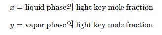
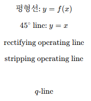
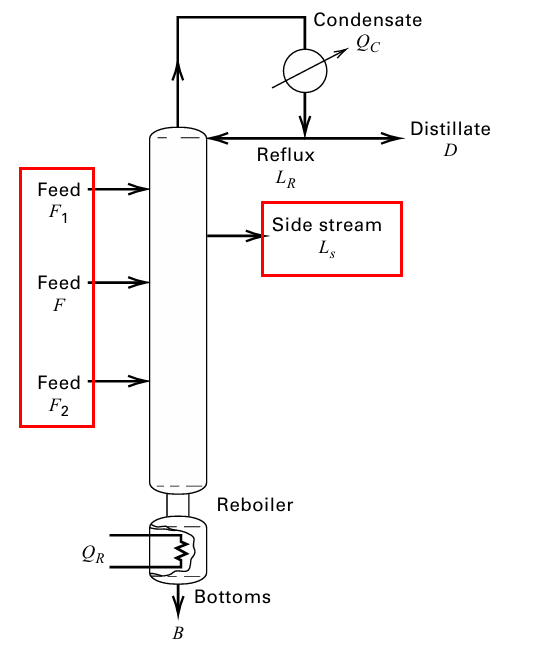
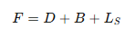
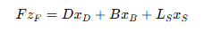
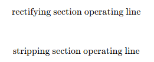
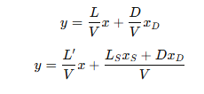
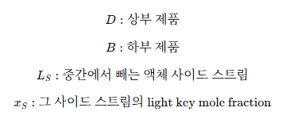
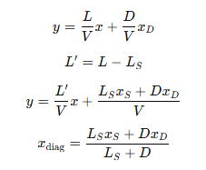

증류에 있어서 Multiple Feeds, Sidestreams,and Open Steam
Multiple Feeds, Sidestreams,and Open Steam은 외부에서 뭔가 들어오거나 빠지는 상황을 뜻한다. 그 지점 기준으로 L,V가 바뀌고, 그래서 조작선이 하나 더 생긴다.
기본적인 상황을 먼저 잡아보자.
일반적인 binary distillation에서 라이트키 몰분율을 다음과 같이 둔다.

그리고 일반적인 메카베-띨레 방법에서는 다음 5선이 존재한다.

단수 계산은 평형선과 조작선을 왔다 갔다 하면서 계단식으로 한다.

이때 그림처럼 중간 단에서 제품을 하나 더 빼는 사이드 스트림이 있는 경우 물질수지는 다음처럼 된다.
 
이때 중요한 것은, 일반 feed 하나짜리 증류탑은 보통 조작선이 2개이다.

그런데 중간에서 액체를 빼면, 그 지점 아래에서는 내려가는 액체 유량이 줄어든다.
즉 사이드 스트림 위쪽에서는 액체 유량이 L 인데, 액체 사이드 스트림 LS를 빼고 나면 아래쪽 액체 유량은 L′=L−LS가 된다. 반면 saturated liquid sidestream이면 기상 유량은 그대로라고 두므로 V′=V이다.
따라서 원래 조작선 기울기가 L/V였다가 사이드 스트림 아래에서는 L-LS/V로 바뀐다.
그래서 조작선을 다음처럼 구분한다.
 
이거 두개는 그냥 그리다보면 만나게 되어있다. 이때 만나는 점의 x좌표는 xs이다.
다음 4 식을 알아두도록 하자. 이는 사이드 위쪽, 사이드 아래쪽 조작선에 해당한다.
